Notes on ARIA Use in HTML
First Rule of ARIA Use
If you can use a native HTML element [[HTML]] or attribute with the semantics and behavior you require already built in, instead of re-purposing an element and adding an ARIA role, state or property to make it accessible, then do so.
Under what circumstances may this not be possible?
- If the feature is available in HTML [[HTML]] but it is not implemented or it is implemented, but accessibility support is not.
- If the visual design constraints rule out the use of a particular native element, because the element cannot be styled as required.
- If the feature is not currently available in HTML.
Second Rule of ARIA Use
Do not change native semantics, unless you really have to.
For example: Developer wants to build a heading that's a tab.
Do not do this:
<h2 role=tab>heading tab</h2> Do this:
<div role=tab><h2>heading tab</h2></div>If a non-interactive element is used as the basis for an interactive element, developers have to add the semantics using ARIA and the appropriate interaction behavior using scripting. In the case of a button, for example, it is much better and easier to Just use a (native HTML) button.
It is OK to use native HTML elements, that have similar semantics to ARIA roles used, for fallback. For example, using HTML list elements for the skeleton of an ARIA-enabled, scripted tree widget.
Third Rule of ARIA Use
All interactive ARIA controls must be usable with the keyboard.
If you create a widget that a user can click or tap or drag or drop or slide or scroll, a user must also be able to navigate to the widget and perform an equivalent action using the keyboard.
All interactive widgets must be scripted to respond to standard keystrokes or keystroke combinations where applicable.
For example, if using role=button the element must be able to receive focus and a user must be able to activate the action associated with the element using both the enter (on WIN OS) or return (MAC OS) and the space key.
Refer to the Design Patterns and Widgets and Developing a Keyboard Interface sections of [[WAI-ARIA-PRACTICES-1.2]]
Fourth Rule of ARIA Use
Do not use role="presentation" or aria-hidden="true" on a focusable element .
Using either of these on a focusable element will result in some users focusing on 'nothing'.
Do not do this:
<button role=presentation>press me</button> Do not do this:
<button aria-hidden="true">press me</button> Applying aria-hidden to a parent/ancestor of a visible interactive element will also result in the interactive element being hidden, so don't do this either:
<div aria-hidden="true">
<button>press me</button>
</div>If an interactive element cannot be seen or interacted with, then you can apply aria-hidden, as long as it's not focusable. For example:
button {opacity:0}
<button tabindex="-1" aria-hidden="true">press me</button>
If an interactive element is hidden using display:none or visibility:hidden (either on the element itself, or any of the element's ancestors),
it won't be focusable, and it will also be removed from the accessibility tree. This makes the
addition of aria-hidden="true" or explicitly setting tabindex="-1" unnecessary.
Fifth Rule of ARIA Use
All interactive elements must have an accessible name.
An interactive element only has an accessible name when its Accessibility API accessible name (or equivalent) property has a value.
For example, the input type=text in the code example below has a visible label 'user name' , but no accessible name:
user name <input type="text">
or
<span>user name</span> <input type="text">
The control's MSAA accName property is empty:
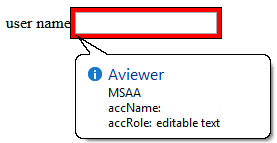
In comparison, the input type=text in the code example below has a visible label 'user name' and an accessible name. This example has an accessible name because the input element is a labelable element and the label element is used correctly to associate the label text with the input.
<!-- Note: use of for/id or wrapping label around text
and control methods will result in an accessible name -->
<input type="text" aria-label="User Name">
or
<span id="p1">user name</span> <input type="text" aria-labelledby="p1">
The control's MSAA accName property has a value of "user name":
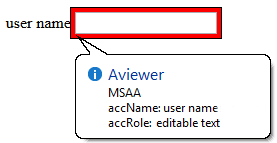
Note: The example above is for ARIA widgets. For regular HTML inputs, follow the First Rule of ARIA, and use the label element with a for attribute to associate labels with input elements.
HTML label element and labelable elements
The following is about using the label in HTML. If you are building ARIA widgets, refer to the ARIA Authoring Practices Document
The label element cannot be used to provide an accessible name for custom controls, unless the label is referencing a native HTML labelable element.
<!-- HTML input element with combox role -->
<label>
user name <input type="text" role="combobox">
</label>
The control's MSAA accName property has a value of "user name":
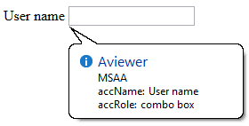
A div element regardless of what role is assigned is not an HTML labelable element.
<!-- HTML div element with combox role -->
<label>
user name <div role="combobox"></div>
</label>
The control's MSAA accName property is empty:
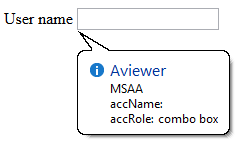
5th rule is a work in progress
What Does Adding a Role Do to the Native Semantics?
Adding an ARIA role overrides the native role semantics in the accessibility tree which is reported via the accessibility API, and therefore ARIA indirectly affects what is reported to a screen reader or other assistive technology.
For example, this code in the HTML tree:
<h1 role=button>text</h1>Becomes this in the accessibility tree:
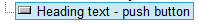
What Adding a Role Does Not Do
Adding an ARIA role will not make an element look or act differently for people not using assistive technology. It does not change the behaviors, states and properties of the host element but only the native role semantics.
For example, this code in the HTML tree:
<button role=heading aria-level=1>text</button>Becomes this in the accessibility tree:
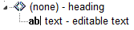
But it can still be pressed, it is still in the default tab order, still looks like a button and still triggers any associated actions when pressed. That's why it is an HTML5 conformance error to change a button into a heading.
Note: Changing the role of an element does not add behaviors, properties or states to the role used. ARIA does not change the way it looks or acts in a browser. For instance, when links are used to behave like buttons, adding role=button alone is not sufficient. It will also be necessary to make act like a button, by including a key event handler that listens for the space key which native buttons do, because native buttons can be activated using the enter key or the spacebar.
Add ARIA Inline or via Script?
If the ARIA role or aria-* attribute does not rely on scripting to provide interaction behavior, then it is safe to include the ARIA markup inline. For example, it is fine to add ARIA landmark roles or ARIA labeling and describing attributes inline.
If the content and interaction is only supported in a scripting-enabled browsing context, i.e. Google docs (its applications require JavaScript enabled to work), it is also safe to include the ARIA markup inline as the application simply will not work (for anyone) without JavaScript enabled.
Otherwise insert, change and remove ARIA via scripting. For instance, a collapsed section of a tree widget might look like this:
<li role=treeitem aria-expanded=false ...When the user opens the section, it is changed to this using JavaScript :
<li role=treeitem aria-expanded=true ...ARIA Validation
The easiest method is to use the HTML5 DOCTYPE with ARIA markup and validate using the W3C Nu Markup Checker. ARIA works equally well with any other DOCTYPE, but validation tools will produce errors when they encounter ARIA markup as the associated DTDs have not been updated to recognize ARIA markup and it is unlikely they ever will be.
These validation errors in versions of HTML prior to HTML5 are in no way indicative of ARIA creating any real world accessibility problems nor do they mean there will be a negative user experience. They are merely the result of old automated validation tests that do not accommodate ARIA accessibility annotations.
Note: The W3C Nu Markup Checker support for ARIA checking is a work in progress, so cannot be wholly relied upon (though it is pretty darn good!) to provide the correct results. It is recommended that if you encounter a result that conflicts with the ARIA conformance requirements in the ARIA specification or the HTML specification, please raise an issue.
Use of Role=presentation or Role=none
role=presentation, or its synonym role=none, removes the semantics from the element it is on.
For example, this code in the HTML tree:
<h1 role="presentation">text</h1>Becomes this in the accessibility tree:
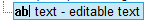
In other words, it is just reported in the accessibility tree as a text string with no semantic meaning.
For elements with no required children, any elements nested inside the element with role=presentation/none preserve their semantics.
For example, this code in the HTML tree:
<h1 role="presentation"><abbr>API</abbr></h1>Becomes this in the accessibility tree:
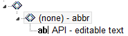
For elements with required children (such as ul or table) any required child elements nested inside the element with role=presentation/none also have their semantics removed.
For example, this code in the HTML tree:
<table role="presentation">
<tr>
<td>
<abbr>API</abbr>
</td>
</tr>
</table>Becomes this in the accessibility tree:
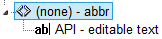
Note: Any elements that are not required children of the element with a role=presentation/none keep their semantics. This includes other elements with required children such as nested lists or nested tables.
For example this code, consisting of a table with another table nested inside it, in the HTML tree:
<table>
<tr>
<td>
<table>
<tr>
<td>
<abbr>API</abbr>
</td>
</tr>
</table>
</td>
</tr>
</table>Becomes this in the accessibility tree:
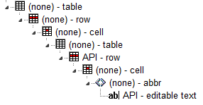
By adding role=presentation/none to the outer table element, this code in the HTML tree:
<table role="presentation">
<tr>
<td>
<table>
<tr>
<td>
<abbr>API</abbr>
</td>
</tr>
</table>
</td>
</tr>
</table>Becomes this in the accessibility tree, the semantics of the outer table including its required children (the tr and td elements)
are removed by the addition of role=presentation/none:
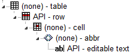
Examples of role=presentation/none Use
Use in fixing an incorrect table structure
<div aria-readonly="true" role="grid">
<table role="presentation">
<tbody><tr role="row">
<th role="columnheader">Dog Names</th>
<th role="columnheader">Cat Names</th>
<th role="columnheader">Cow names</th>
</tr>
</tbody></table>
<table role="none">
<tbody><tr role="row">
<td role="gridcell">Fido</td>
<td role="gridcell">Whiskers</td>
<td role="gridcell">Clarabella</td>
</tr>
<tr role="row">
<td role="gridcell">Woofie</td>
<td role="gridcell">Claws</td>
<td role="gridcell">Glenn</td>
</tr>
</tbody></table>
</div>Practical Support: aria-label, aria-labelledby and aria-describedby
Well supported elements
aria-label,aria-labelledbyandaria-describedbyare robustly supported for interactive content elements such as links and form controls including the manyinputtypes. They also work well ondivandspanelements with interactive roles such asrole=link,button. By design,aria-labeloraria-labelledbyreplace any other label text inside the element.- All three are OK on
navandmainelements. - They are OK on
divelements IF they haverole=navigation,search,main,img. - They are OK on a
tableelement (except ignored by VoiceOver on iOS).
Other static elements with aria-label, aria-labelledby and aria-describedby
NOTE: There are no appreciable differences in these tests across popular browsers, platforms or in iframes.
| JAWS | NVDA | VoiceOver | Talkback | |
|---|---|---|---|---|
aria-labelledby and aria-label |
Ok on Ignored on all other static content except those listed above |
Ignored on all other static content except those listed above |
Other elements read aria-label with virtual cursor and then let user enter and read the contents. |
All the static content is overridden except |
aria-describedby |
Well supported on static content |
Ignored on static content not listed above unless given an interactive role and |
VO on MacOS is different from iOS VO on MacOS is OK on most static content. VO on iOS only reads it if on |
Well supported on static content |
aria-label and aria-labelledby have similar behaviour in screen readers and the Accessibility API, but aria-label should be reserved for when there is no visible text on the page to reference or when keeping track of id values would be too difficult. Test sources
Internet Explorer notes on aria-labelledby, aria-label, and aria-describedby
In Internet Explorer, if you use aria-labelledby with multiple id references or aria-describedby with single or multiple id references, the referenced elements must be what Microsoft terms as accessible HTML elements.
The following example of aria-labelledby with multiple references uses a span with a tabindex=-1 added. Refer to Making Non accessible Elements Accessible.
<label
id="l1"
for="f3">label text</label>
<input type="text" id="f3"
aria-labelledby="l1 l2"
>
<p>other content</p>
<span
tabindex="-1"
id="l2"
>more label text</span>
Elements also become accessible HTML elements in Internet Explorer when the element has an ARIA role. For example:
<div aria-describedby="test">text</div>
<div id="test"
role="tooltip"
>tooltip text</div>
Hiding Content Has No Effect on Accessible Name or Description Calculation
By design, hiding the content (using CSS display:none or visibility:hidden or the HTML hidden attribute) of the element(s) referenced by aria-labelledby and aria-describedby does not stop the content from being used to provide the name/description.
By default, assistive technologies do not relay hidden information, but an author can explicitly override that and include hidden text as part of the accessible name or accessible description by usingaria-labelledbyoraria-describedby.
In the following example the description will be available to assistive technology users in both states:
Non-error state: message visually hidden
<label>Name <input type="text" aria-describedby="error-message"></label>
<span id="error-message" style="display:none">
You have provided an incorrect name</span>
Note: addition of aria-hidden=true to the referenced element makes no difference:
<span id="error-message" style="display:none" aria-hidden="true">
You have provided an incorrect name</span>Error state: message visible
<span id="error-message" style="display:inline">
You have provided an incorrect name</span>Methods to Provide Context Sensitive Name/Description Text
If you want to associate context sensitive text, such as an error message, you can:- Add the referenced element to the DOM when the error state occurs.
- Add the error text as child of the referenced element in the DOM when the error state occurs.
- Add the id reference in the DOM to the
aria-labelledby/aria-describedbyattribute, when the error state occurs.
The Effect of Accessible Name on Background Images
Try to avoid presenting informational images in CSS backgrounds. If your image contains important information for the end user, then it should be provided in an HTML <img> tag with proper alt text. The CSS Spec says this:
For accessibility reasons, authors should not use background images as the sole method of conveying important information. See WCAG failure #F3 [WCAG20] . Images are not accessible in non-graphical presentations, and background images specifically might be turned off in high-contrast display modes. Source .
What If You Can't Avoid Using CSS Images or If You Want Alternate Text for "Non-important" Ambient Photos, Etc.?
The CSS spec makes its discouragement of CSS informational background images a "SHOULD" not a "MUST" because there are times when visual design or existing code makes it difficult to change it to an HTML image without redesigning the front-end. Other times the author may want to provide alternate text for an ambient image that is not "important" to the understanding of the content but as a courtesy to screen reader users who prefer knowing what is in the image. Here is a detailed article on ambient images vs pure decoration vs informational images.
When Providing Alternate Text for the CSS Image, There Are Number of Considerations
If the <div> tag has any content inside it, then a role="img" and aria-label could obscure the inside content because of the accessible name calculation, or the assistive technology might just ignore the aria-label.
So do not put the CSS background image inside a <div> that contains any content. It's best to use an empty <span> and an aria-label with role="img"
Do this:
<div>
<span class="background-image" role="img" aria-label="[place alt text here]"> </span>
[all the rest of my content]
</div>
Don't do this:
<div class="background-image" role="img" aria-label="blah blah blah">
[all the rest of my content]
</div>
What If the Author Has to Have a CSS Image on a <div> that Contains Content?
Sometimes there are dependencies in the CSS stack and messing with it can upset the design and layout of the site, or a request to change the code could get hung up in approval from various stakeholders. In cases where the author has to have the background image in the <div> that wraps up other content, then here is a fallback.
<div class="background-image" >
<span role="img" aria-label="[place alt text here]"> </span>
[all the rest of my content]
</div>
This is a hack because semantically the alternate text is not on the element that actually has the image. However, from a screen reader perspective the <div> with the background image is ignored and so placing the <span> directly following it will provide that information in a way that will seem as if the alternate text was in the same place as the background image.
Using ARIA role=application
How Does role="application" Affect a Screen Reader?
On many popular screen readers today, most keystrokes are captured by the screen reader and not the web page when the user is in browse mode. This is necessary for efficient navigation of a page. As of this writing, when application mode is set, many screen readers stop intercepting keystrokes, and pass all keystrokes directly to the browser. Then the user won't be able to navigate the page as easily. For instance they won't be able to skip around the page by headings or read a paragraph of static text line-by-line. However, several screen readers do not behave differently when there is an application role set.
So When Should I Use It, and When Not?
In determining when to use role=application, one should consider, among other things, the advantages of screen reader keyboard shortcuts weighed against the loss of those features. It generally should not be used, and if it is, usability testing with screen reader users should be conducted.
You do not use role="application" if a set of controls only contains these widgets, that are all part of standard HTML. This also applies if you mark them up and create an interaction model using WAI-ARIA roles instead of standard HTML widgets:
NOTE: It's not recommended that authors develop custom text input widgets. It's almost always best to use the native inputs for these.
text box. This also applies to password, search, tel and other newer input type derivativestextareacheck boxbuttonradio button(usually inside a fieldset/legend element wrapper)select + option(s)links,paragraphs,headings, and other elements that are classic/native to documents on the Web.
You also do not use the application role if your widget is one of the following more dynamic and non-native widgets. Screen readers and other assistive technologies that support WAI-ARIA will support switching between browse and focus modes for these by default too:
tree viewslidertablethat has focusable items and is being navigated via the arrow keys, for example, a list of e-mail messages where you provide specific information. Other examples are interactive grids, tree grids, etc.- A list of tabs (
tab, tablist) where the user selects tabs via the left and right arrow keys. Remember that you have to implement the keyboard navigation model for this! dialogandalertdialog. These causes some screen readers to go into a sort of application mode (implicitly) once focus moves to a control inside them. Note that for these to work best, set thearia-describedbyattribute of the element whose role isdialogto theidof the text that explains the dialog's purpose, and set focus to the first interactive control when you open it:
<div role="dialog" aria-label="login" aria-describedby="log1"> <div id="log1" tabindex="-1">Provide user name and password to login.</div> ... ... </div>toolbarandtoolbar buttons,menusandmenu items, and similar.
You only want to use role=application if the content you’re providing consists of only focusable, interactive controls, and of those, mostly advanced widgets that emulate a real desktop application. Note that, despite many things now being called a web application, most of the content these web applications work with are still document-based information, be it Facebook posts and comments, blogs, Twitter feeds, or even accordions that show and hide certain types of information dynamically. We primarily still deal with documents on the web, even though they may have a desktop-ish feel to them on the surface.
It is not necessary to use role=application to have control-specific keyboard shortcuts while the user is in forms (focus) mode on their screen reader. For instance, a custom control with ARIA role=listbox can easily capture all keys pressed including arrow keys, while the user is interacting with it.
In short: The times when you actually will use role=application will probably be very rare!
So Where Do I Put role=application in the Rare Cases It Is Useful?
Put it on the closest containing element of your widget, for example, the parent div of your element that is your outer most widget element. If that outer div wraps only widgets that need the application interaction model, this will make sure focus mode is switched off once the user tabs out of this widget.
Only put it on the body element if your page consists solely of a widget or set of widgets that all need the focus mode to be turned on. If you have a majority of these widgets, but also have something you want the user to browse, use role=document on the outermost element of this document-ish part of the page. It is the counterpart to role=application and will allow you to tell the screen reader to use browse mode for this part. Also make this element tabbable by setting a tabindex=0 on it so the user has a chance to reach it.
As a rule of thumb: If your page consists of over 90 or even 95 percent of widgets, role=application may be appropriate. Even then, find someone knowledgeable who can actually test two versions of this: One with and one without role=application set to see which model works best.
NEVER put role=application on a widely containing element such as body if your page consists mostly of traditional widgets or page elements such as links that the user does not have to interact with in focus mode. This will cause huge headaches for any assistive technology user trying to use your site/application.
For further information on the use of role=application refer to If you use the WAI-ARIA role "application", please do so wisely!
Custom Control Accessible Development Checklist:
Check your custom control against the following design considerations. If the answer to any of them is 'No' then consider fixing before release or at least documenting the issues to inform other developers that your custom control will not be usable by some people due to limited accessibility support.
| design Consideration | description | Yes/No |
|---|---|---|
| focusable | Can you get to the control via the keyboard? Refer to Providing Keyboard Focus |
|
| keyboard operable | Can you use the control with the keyboard? Refer to Keyboard Navigation | |
| touch operable | Can you use the control with touch gestures? With assistive technology enabled? | |
| expected operation | Can you operate the control using the standard keys (Refer to ARIA Widget Design Patterns) and/or touch gestures for the control type? | |
| clear indication of focus | Can you easily see it when the control has focus? Refer to Visible Focus (WCAG2) | |
| label | The control has a text label that is exposed as an accessible name in accessibility APIs | |
| role | The control has an appropriate role exposed in accessibility APIs | |
| states and properties | The control has any UI states and properties that it has exposed in accessibility APIs | |
| color contrast | The control label/description/icon and its states are perceivable/usable for low vision users (Use a color contrast checker.) | |
| high contrast mode | The control is perceivable/usable when High Contrast Mode is enabled (e.g. Windows HC mode) |
ARIA Adds Nothing to Default Semantics of Most HTML Elements
In some cases the semantics of an HTML element can be expressed by an ARIA role, state or property. This is known as the element's 'Default Implicit ARIA semantics'
None of the elements defined in HTML4 need ARIA roles added to expose their default semantics. Adding an ARIA role is extra work for no gain and could lead to pain for you or somebody else. The new features defined in HTML5 , where implemented, now have their default semantics exposed by most browsers. The HTML Specification includes this note:In the majority of cases setting an ARIAroleand/oraria-*attribute that matches the default implicit ARIA semantics is unnecessary and not recommended as these properties are already set by the browser.
Some Examples of Redundant ARIA
Adding default implicit roles to interactive elements listed in the HTML5 Recommendation is a waste of time:
<button role="button">press me</button> Adding ARIA state or property attributes in addition to their native HTML counterparts is a waste of time:
<input type="text" required aria-required="true">
<div hidden aria-hidden="true"><h1 role="heading" aria-level="1">heading text</h1>Aria Roles and Properties Not Available as Features in HTML
Below are listed the ARIA roles and properties not considered to be available natively in HTML. It is clear that many roles and properties provided by ARIA, which can be used to convey information to users, are not available in HTML.ARIA Roles
- `alert`
- `alertdialog`
- `application`
- `directory`
- `document`
- `feed`
- `grid`
- `gridcell`
- `group`
- `log`
- `marquee`
- `menu`
- `menubar`
- `menuitemcheckbox`
- `menuitemradio`
- `none`
- `note`
- `presentation`
- `scrollbar`
- `search`
- `status`
- `switch`
- `tab`
- `tablist`
- `tabpanel`
- `timer`
- `toolbar`
- `tooltip`
- `tree`
- `treegrid`
- `treeitem`
ARIA States and Properties (aria-* Attributes)
- `aria-activedescendant`
- `aria-atomic`
- `aria-busy` (state)
- `aria-controls`
- `aria-describedby`
- `aria-dropeffect`
- `aria-expanded` (state)
- `aria-flowto`
- `aria-grabbed` (state)
- `aria-haspopup`
- `aria-hidden` (state)
- `aria-label`
- `aria-labelledby`
- `aria-level`
- `aria-live`
- `aria-orientation`
- `aria-owns`
- `aria-posinset`
- `aria-pressed` (state)
- `aria-relevant`
- `aria-setsize`
- `aria-sort`
ARIA Design Patterns and Touch Device Support
The ARIA Design Patterns in WAI-ARIA Authoring Practices 1.1 describe how to implement custom UI elements so that they are usable by keyboard only users and understandable to users of assistive technology. Some of the ARIA design patterns currently specify, and rely on, keyboard-specific event handling. This is not supported on devices which only provide a touch screen, and has limited or no support (depending on the specific operating system) on mobile phones/tablets with an additional physical keyboard. An in progress ARIA design patterns - touch UA/AT gap analysis (Google sheet) is available (Also available as a static file in .ods format). Related WAI-ARIA Authoring Practices 1.1 issue
Recommendations Table:
Refer to the Document conformance requirements for use of ARIA attributes in HTML table in the ARIA in HTML specification.
ARIA Role, State, and Property Quick Reference
Refer to the Allowed ARIA roles, states and properties table in the ARIA in HTML specification.